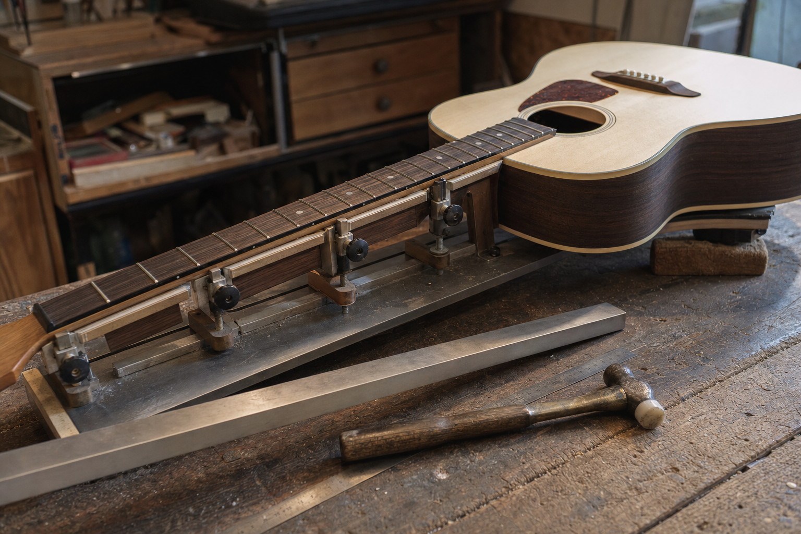
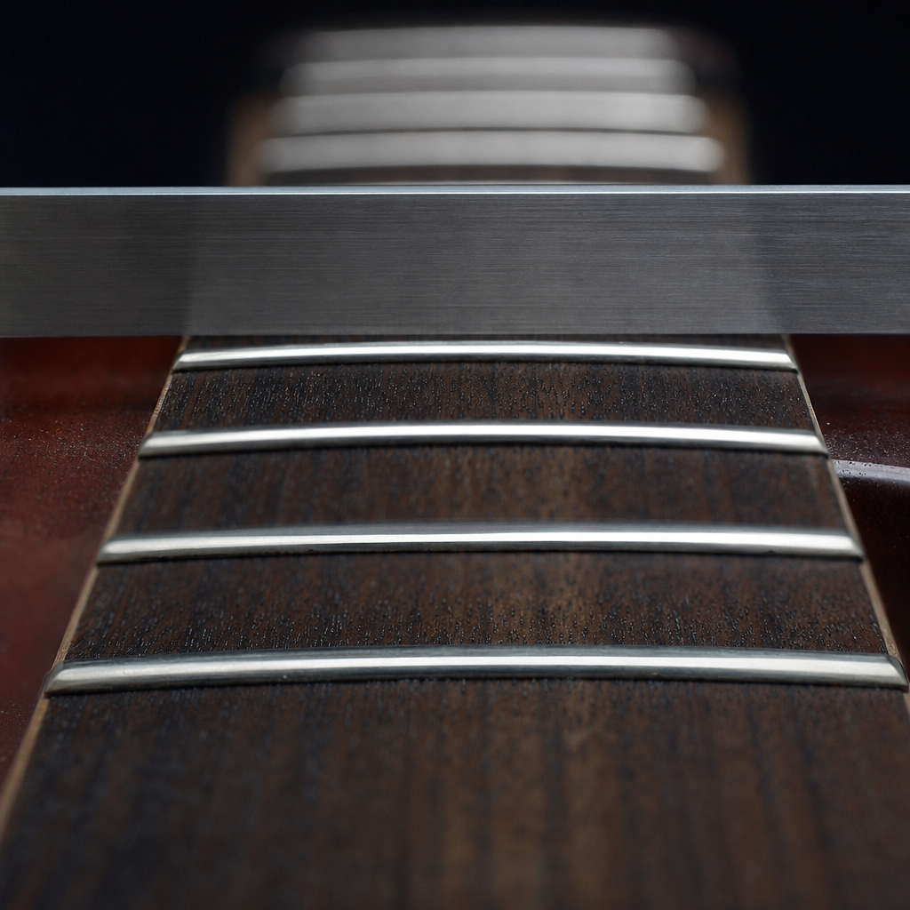
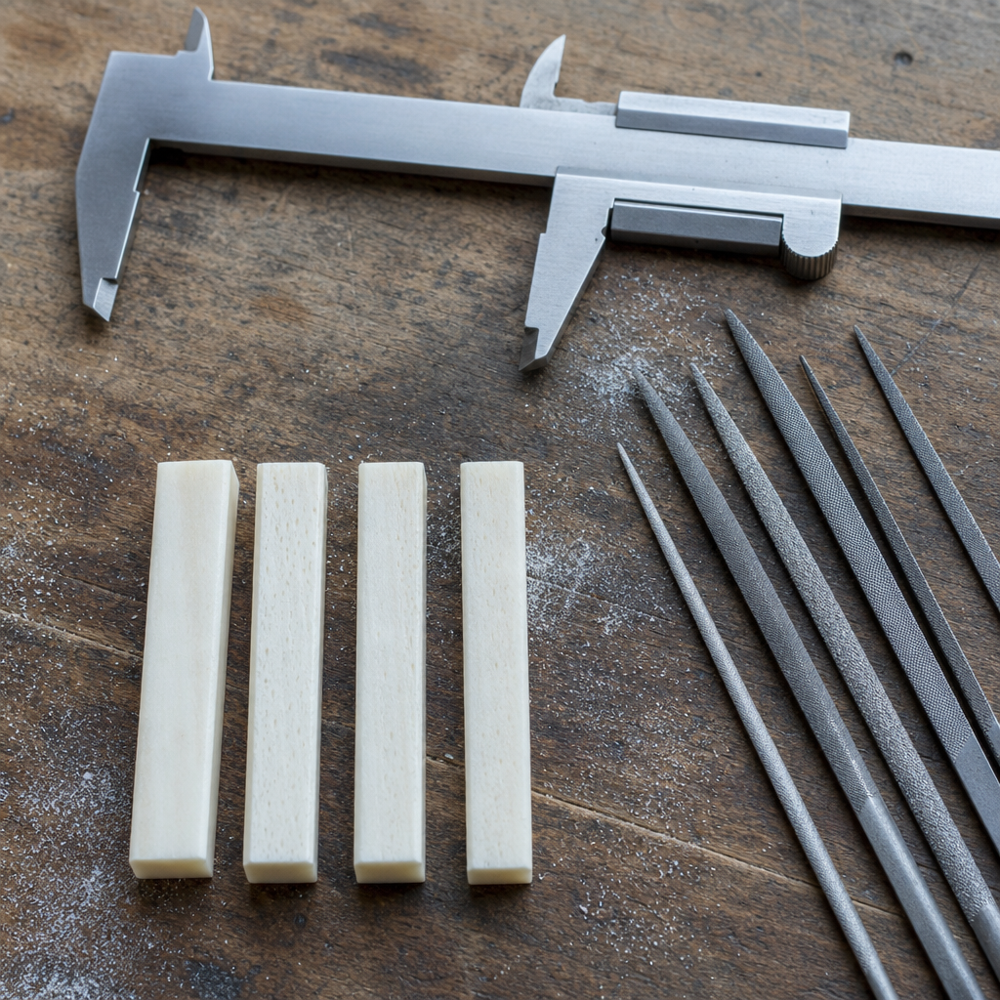
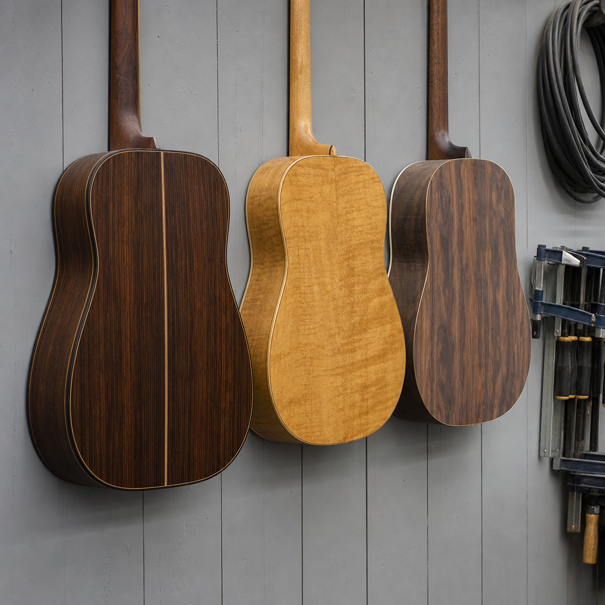

If it is fighting you, bring it in.
A repair bench in Historic Occoquan. At most shops setups are an afterthought. Here they are the whole job, and you do not need an appointment to walk in with a guitar under your arm.
- Authorized Silver Service Center
- Erlewine neck jig for all fretwork
- No appointment necessary
- Neck resets taken on

Tell me what it is doing.
You do not need to know the name of the repair. Almost nobody does. Say what the instrument is doing and the bench works backwards from there.
-
The action is too high and it hurts to play
Neck relief has moved, or the saddle and nut were never cut for the strings you use.
Full setup$100
-
It buzzes, but only in one place on the neck
One or two frets are standing proud of the others. It is almost never the truss rod.
Level, crown and polish, on the jigfrom $175
-
Open strings ring sharp and the first fret is worse
The nut slots are cut too high, which is the most common fault on a factory instrument.
New bone nut, slotted to the strings$100 plus material
-
It crackles, cuts out, or the volume jumps
A worn pot, a dry joint, or a jack that has been half plugged in for years.
Electronics$100 an hour
-
The top is lifting behind the bridge
A loose bridge or a failing brace. This one gets worse while you wait.
Bridge off under a heat blanket, regluedon inspection
-
It played well for twenty years and now nothing helps
The neck angle has moved. No setup can reach this, which is why most shops send it away.
Neck resetfrom $550
Every price here is an estimate until the instrument is on the bench, and anything not on the list is a hundred dollars an hour. A setup usually takes two to seven days. Parts are on the shelf with twenty per cent off installation when they are bought here, and there is a three per cent card fee. If it turns out to be something not on this list, that is normal, and you will be told what it is before anything is done to it.
Why the jig matters.
Frets are levelled with the neck held under simulated string tension, because a neck at rest is not the shape it is in when you are playing it. Level it flat on the bench and it is not flat when you put the strings back on.



The bench
205-C Union StreetOccoquan, Virginia 22125
service@unionstreetguitars.com
Call the shop
(703) 731-9785Open
- Tue to Fri12 to 6
- Saturday12 to 4
- Sun and MonClosed
Photography shown is illustrative art direction. The finished site would use photography of Union Street Guitar Works, its own bench and its own work in progress. The symptom table is written from the services already listed on unionstreetguitars.com; the hours, the prices and the parts discount are the shop's own, as published on unionstreetguitars.com in September 2026.